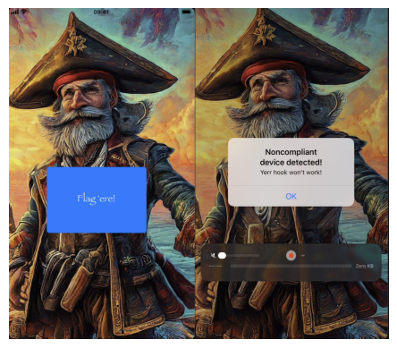
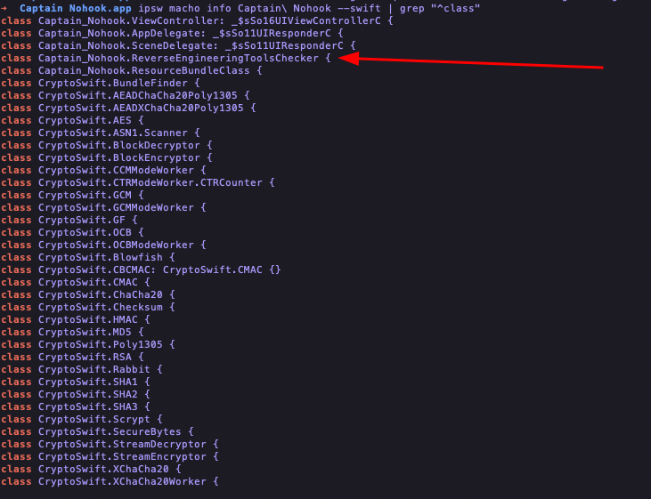
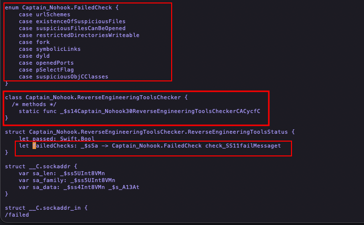
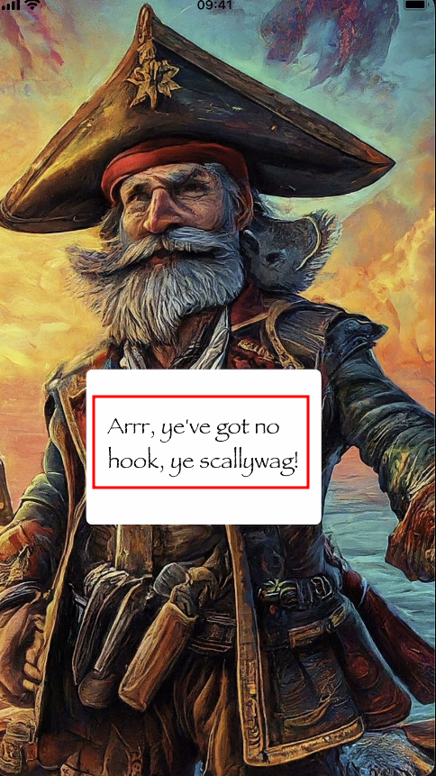
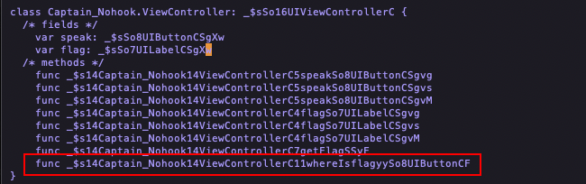
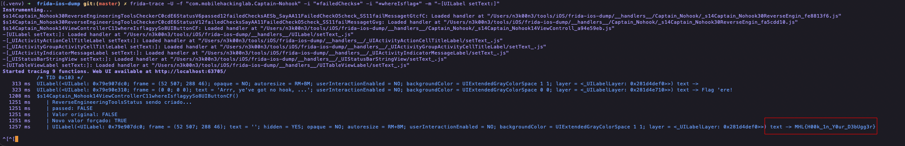
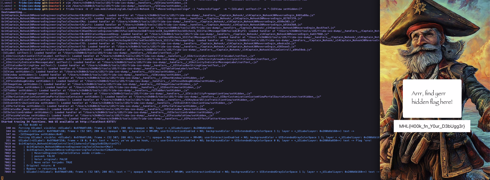

Initial Observation
When opening the Captain Nohook application, the first screen appears normally. However, after clicking the button "Flag 'ere!", the application displays a warning message indicating that the device is non-compliant.
This behavior strongly suggests that the application performs anti-reverse-engineering checks before allowing access to the flag.
Because of that, the next step was to analyze the application's internal structure.

Inspecting the Application Classes
By inspecting the application's classes it was possible to identify a
structure related to FailedChecks.


This indicates that the application performs several runtime security validations, such as:
- checking suspicious files
- checking suspicious Objective-C classes
- detecting reverse engineering tools
- checking writable restricted directories
- checking open ports
- verifying symbolic links
- detecting dynamic loader anomalies
These checks are commonly used in hardened iOS applications to prevent runtime instrumentation using tools like:
- Frida
- debuggers
- dynamic patching frameworks
Observing Runtime Behavior with Frida-Tracee
Once interesting components were identified, the next step was to observe the application's runtime behavior using Frida-Trace.
The following command was used:
frida-trace -U -f "com.mobilehackinglab.Captain-Nohook" -i "*failedChecks*"
This attaches Frida to the application and automatically generates
handlers for any functions containing the string failedChecks.
Frida then creates handler scripts that allow us to intercept and modify function behavior at runtime.
Intercepting the Security Check
The generated handler was modified to manipulate the return value of the reverse engineering check.
defineHandler({
onEnter(log, args, state) {
log('ReverseEngineeringToolsStatus being created...');
state.passed = args[0].toInt32();
log('passed: ' + (state.passed ? 'TRUE' : 'FALSE'));
},
onLeave(log, retval, state) {
log('Original value: ' + (state.passed ? 'TRUE' : 'FALSE'));
retval.replace(ptr("1"));
log('New forced value: TRUE');
}
});
This script forces the function to always return true,
making the application believe that all security checks passed.
As a result:
- the anti-debug protection is bypassed
- the application no longer terminates
However, even after bypassing the protection, the flag was still not displayed.
Instead, the application shows the message:
Arrr, ye've got no hook, ye scallywag!

This clearly suggests that the application expects some form of runtime hook to be present.
Searching for the Flag Function
The next step was searching for functions containing the word
flag.
This led to the discovery of a method named:
whereIsflag

To observe its execution, the following trace was used:
frida-trace -U -f "com.mobilehackinglab.Captain-Nohook" \
-i "*failedChecks*" \
-i "*whereIsflag*"
Even after tracing this method, the flag was still not visible in the UI.
Inspecting UILabel
Since this is an iOS application using UIKit, any text
displayed on screen will likely pass through UILabel.
Therefore the following Objective-C method was traced:
frida-trace -U -f "com.mobilehackinglab.Captain-Nohook" \
-i "*failedChecks*" \
-i "*whereIsflag*" \
-m "-[UILabel setText:]"
This allows interception of every call where text is assigned to a label.
Logging UILabel Text
The generated handler was modified to log the text assigned to labels.
defineHandler({
onEnter(log, args, state) {
try {
const label = new ObjC.Object(args[0]);
const text = new ObjC.Object(args[2]);
log("UILabel(" + label + ") text -> " + text.toString());
} catch (e) {
log("UILabel setText (non-ObjC?): " + args[2]);
}
}
});
This revealed something interesting: the flag was being generated internally but never shown on screen.
Instead, the text was visible only in the Frida logs.

Forcing the Flag to Appear
To make the flag visible in the interface, another handler was modified, this time targeting view visibility.
defineHandler({
onEnter(log, args, state) {
const view = new ObjC.Object(args[0]);
if (view.$className === "UILabel") {
log("Forcing UILabel visible: " + view);
args[2] = ptr("0");
}
}
});
This forces the property:
hidden = NO
Which ensures the label containing the flag cannot be hidden by the application.
Final Result
After applying these modifications, the application finally displays the flag directly on the screen:

Conclusion
This challenge demonstrates how runtime instrumentation tools such as Frida can be used to:
- bypass anti-reverse-engineering protections
- intercept internal application logic
- observe hidden UI behavior
- manipulate runtime values
Sometimes the flag isn't hidden in memory — it's simply hidden from the interface.
Happy Hacking. 🏴☠️